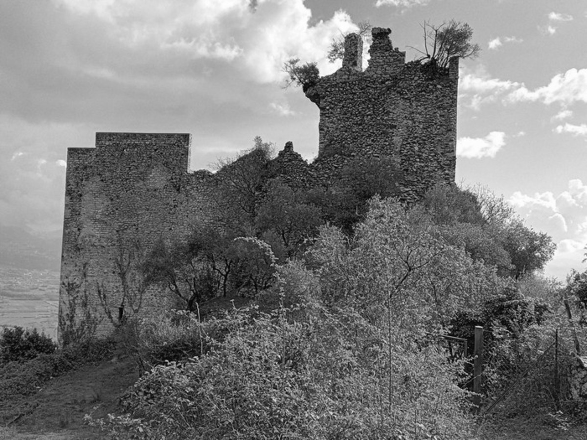

Morolo
La leggenda dell’antica pergamena dell’XI secolo
Da secoli a Morolo si tramanda una storia affascinante: l’esistenza di una pergamena risalente all’Anno Domini 1026, scritta da un uomo del luogo che desiderava lasciare un messaggio ai suoi discendenti e agli uomini del futuro.
La pergamena non è mai stata rinvenuta, ma in più documenti successivi compare sempre una stessa misteriosa frase, considerata la chiave del segreto.
Versione in latino medievale:
“Ubi ascensus ad arcem sub tectis latet.”
Versione in antico volgare:
“Là ove l’erta alla rocca si cela sotto l’abitar delli huomini.”
Questa iscrizione è citata in registri parrocchiali del XVII secolo e in appunti privati di famiglie storiche del paese. Da allora, nessuno è mai riuscito a interpretarla con certezza.
Un enigma che attraversa i secoli
Molti ritengono che un’antica strada che conduceva alla rocca sia stata col tempo inglobata, coperta e nascosta dalle abitazioni sorte successivamente. C’è chi parla di scale murate, chi di passaggi sotterranei, chi di archi chiusi da pietra e calce.
Quel che è certo è che l’iscrizione richiama, in modo quasi poetico, un luogo preciso che ancora oggi nessuno è riuscito a identificare con sicurezza.
Una misteriosa mappa
Secondo alcuni racconti, negli anni ’60 del Novecento sarebbe stata trovata una mappa incompleta, più simile a uno schizzo che a una pianta vera e propria. L’originale sarebbe andato perduto, ma ne esistono copie in collezioni private.

Documento di incerta provenienza, usato come riferimento da alcuni studiosi locali.
Un mistero ancora vivo
Finché qualcuno continuerà a domandarsi cosa significhi davvero la frase “Là dove la salita verso la rocca si nasconde sotto le case”, la leggenda continuerà a vivere.
Forse la pergamena esiste ancora. Forse attende solo la persona giusta per essere trovata.
Mio nonno raccontava che da piccoli evitavano certi vicoli… dicevano che lì sotto passava “qualcosa di antico”.
La frase è estremamente specifica. Non escluderei che il punto indicato sia ancora riconoscibile osservando bene il paese.
Alcuni luoghi sembrano davvero nascondere qualcosa sotto le case. Forse non è solo leggenda…
Mia madre ricordava di una porta murata vicino a un vecchio passaggio. Diceva sempre che dietro ci fosse “una strada che non c’è più”.
In alcuni documenti del dopoguerra si fa riferimento a lavori edilizi che avrebbero “coperto un’antica via”. Chissà…
Quando ero piccola giocavo vicino alle mura e c’era una scala chiusa. Mi hanno sempre detto di non avvicinarmi.
Ci sono troppe coincidenze perché sia solo fantasia. Qualcosa sicuramente c’era, e forse c’è ancora.
Abbiamo analizzato alcune fotografie aeree storiche: si nota una linea che potrebbe indicare un vecchio tracciato nascosto sotto le abitazioni.
La frase è affascinante perché parla chiaramente di un luogo fisico, non di un simbolo. È una vera indicazione.
In certe notti sembra di sentire rumori sotto il pavimento, come se ci fosse uno spazio vuoto sotto le case più vecchie.
Non escluderei la presenza di antichi camminamenti difensivi diretti alla rocca. Molti paesi medievali li avevano.
Questa storia ha sempre fatto parte della nostra infanzia. Sarebbe bellissimo scoprire che qualcosa è davvero rimasto.
Forse la vera pergamena è ancora lì… e aspetta solo la persona giusta per essere trovata da qualcuno curioso abbastanza da guardare sotto ciò che tutti vedono.
Durante le vacanze di Natale andrò a cercarla con Ettore e Anna Luce.